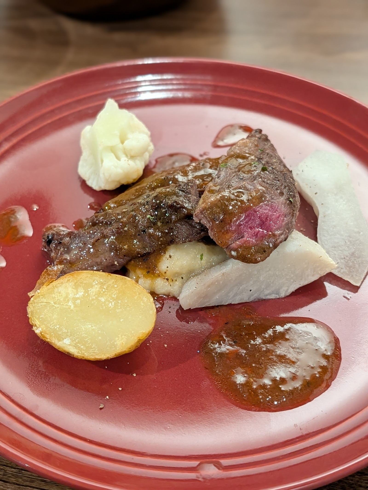
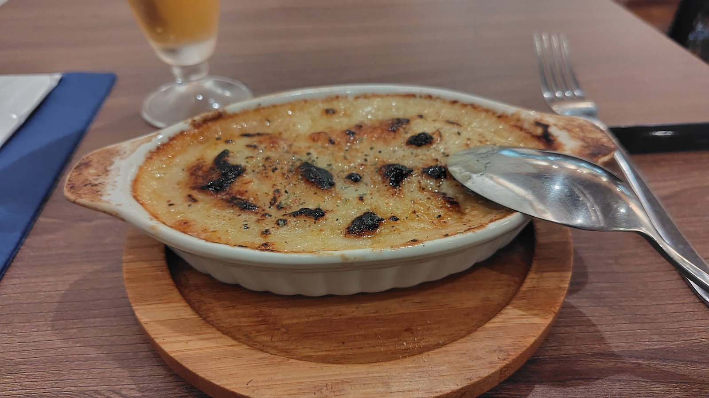

料理・ギャラリー
こちらは、実際にご提供している料理の一部をご紹介するギャラリーです。メニュー表ではなく、雰囲気をお楽しみいただくためのページとしてご覧ください。





メニューの詳細・最新情報はInstagramをご覧ください。
Instagramを見るこちらは、実際にご提供している料理の一部をご紹介するギャラリーです。メニュー表ではなく、雰囲気をお楽しみいただくためのページとしてご覧ください。


メニューの詳細・最新情報はInstagramをご覧ください。
Instagramを見る